Indicadores e metas
Acompanhe faturamento, compras, transações, ticket médio e descontos, com evolução por período e acompanhamento de metas.
Gestão de redes de farmácias
Toda a rede. Uma visão mais clara.
Faturamento, desempenho das lojas e gestão de associados em um único ambiente. O FAT reúne os dados da rede para apoiar decisões, acompanhar resultados e organizar a expansão.
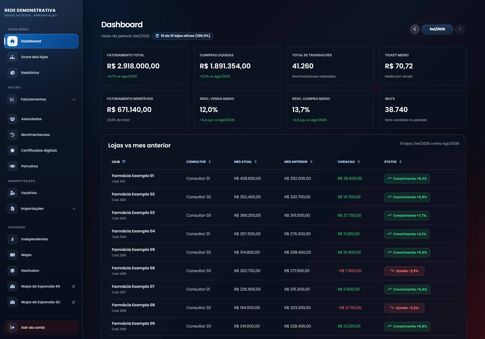
Recursos
Recursos para aproximar o acompanhamento da rede da rotina de gestores, consultores e equipes comerciais.
Acompanhe faturamento, compras, transações, ticket médio e descontos, com evolução por período e acompanhamento de metas.
Analise lojas e grupos econômicos, compare scores e rankings e explore a relação entre avaliação e faturamento.
Faça perguntas sobre a operação em linguagem natural e consulte análises de riscos, oportunidades e estimativas para os próximos períodos.
Organize cadastros, contatos, responsáveis e programas. Acompanhe alterações dos associados e prazos de certificados digitais.
Registre oportunidades, contatos e visitas em um CRM. Acompanhe negociações e organize as próximas datas de contato.
Importe informações de planilhas, exporte cadastros e consulte relatórios por API, com acesso aos recursos conforme o perfil de usuário.
Por dentro da aplicação
Explore os painéis e os fluxos que conectam resultados, unidades e acompanhamento da rede.
Telas demonstrativas com dados fictícios.
Faturamento, compras, transações e comparação mensal das unidades.
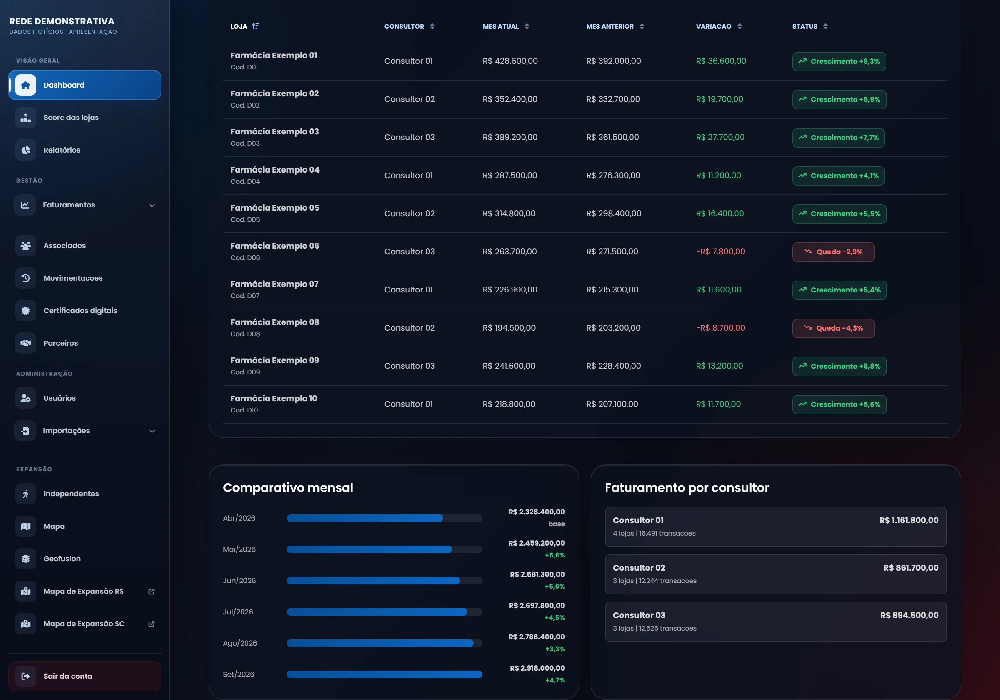
Histórico mensal e acompanhamento do faturamento por consultor.
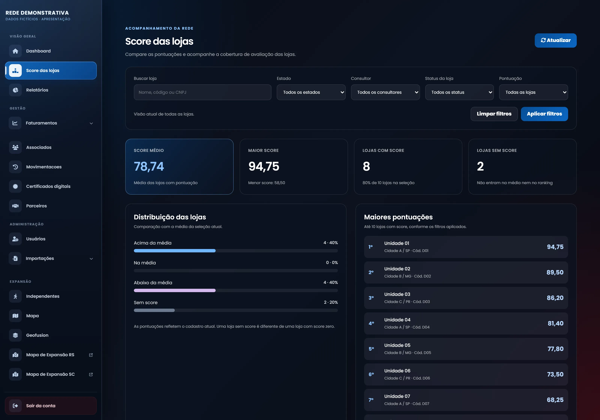
Pontuação média, cobertura das avaliações e unidades com maior desempenho.
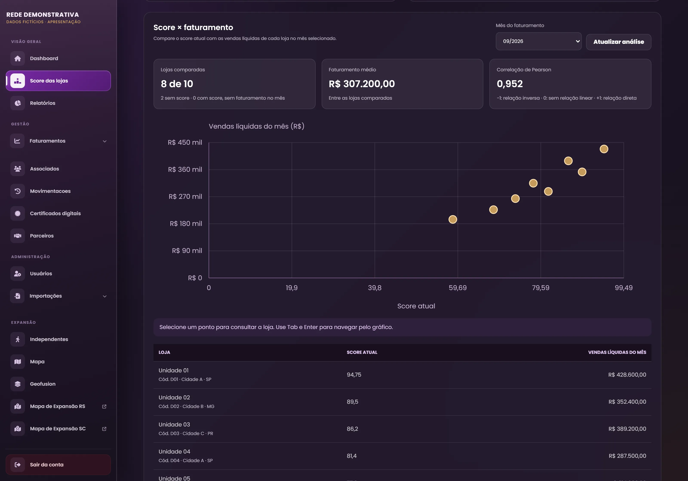
Gráfico de dispersão para comparar o score atual com as vendas líquidas do mês.
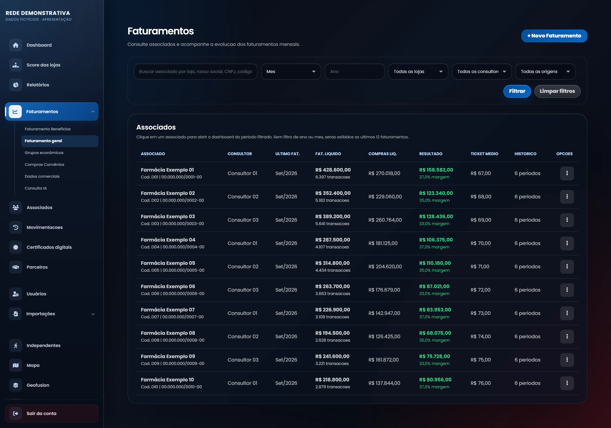
Vendas, compras, resultado bruto, margem e ticket médio de cada unidade.
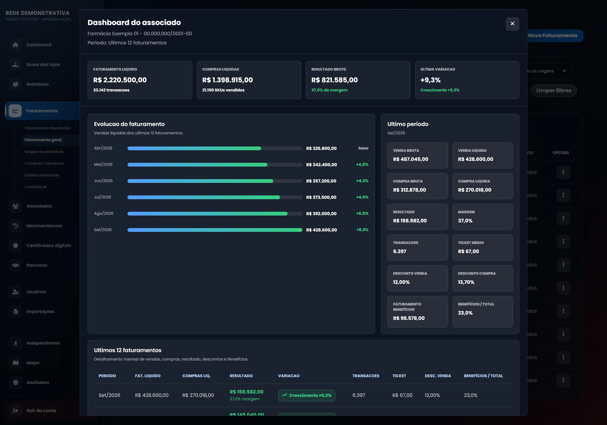
Dashboard com seis meses de histórico, evolução das vendas e resultado consolidado.
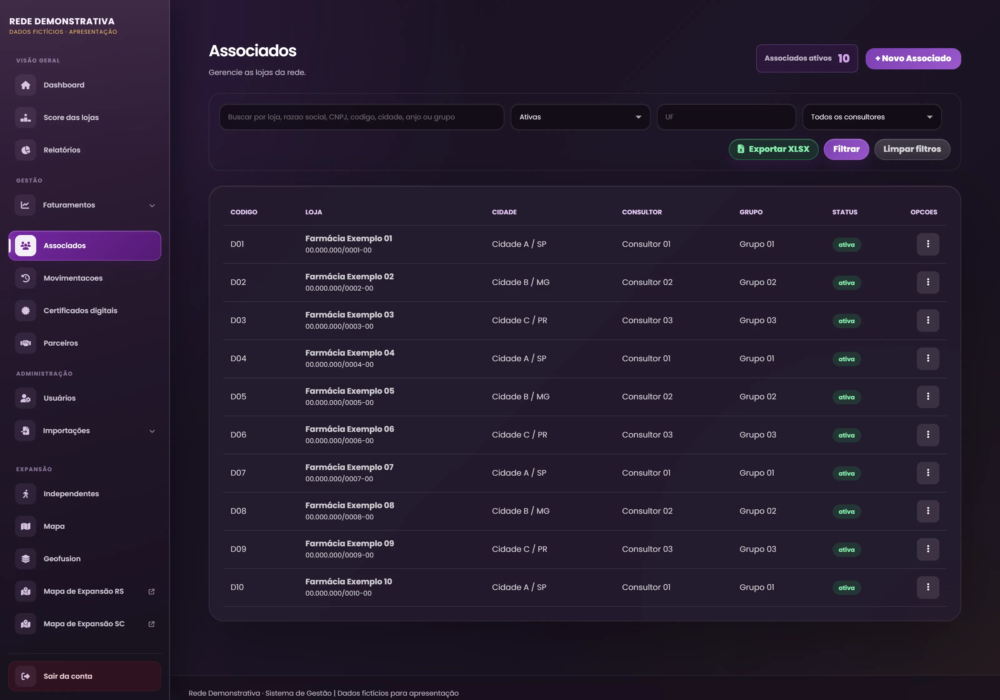
Consulta das unidades por localização, consultor, grupo econômico e status.
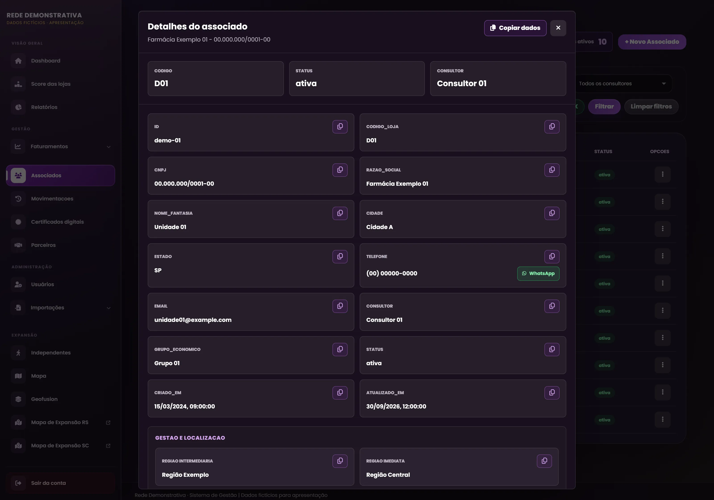
Dados cadastrais, contatos e informações complementares reunidos em uma tela.
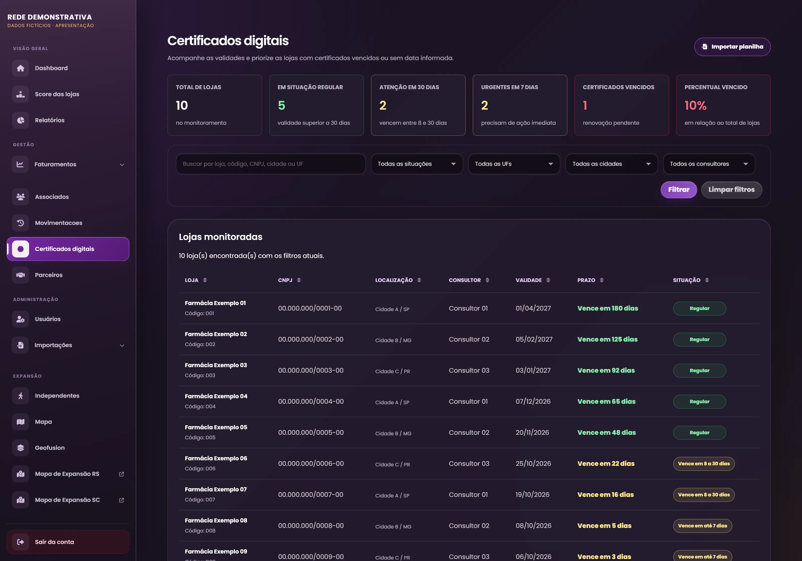
Validades e alertas de vencimento para organizar o acompanhamento de cada loja.
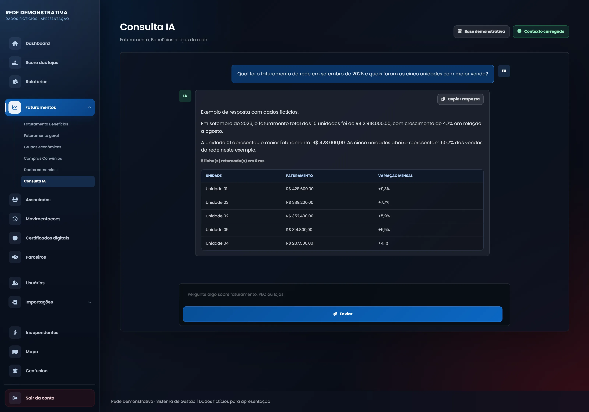
Exemplo de pergunta e resposta sobre faturamento, com resumo e tabela de unidades.
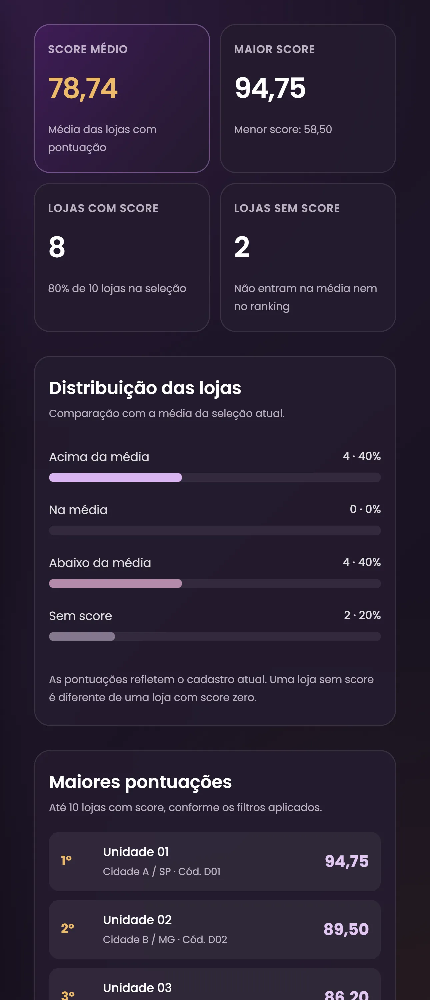
Indicadores, distribuição das pontuações e destaques da rede na versão móvel.
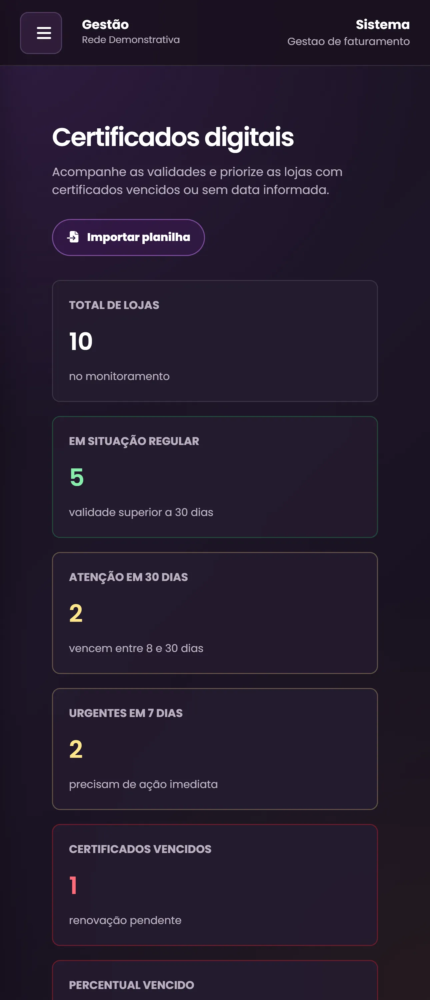
Resumo dos certificados e filtros de acompanhamento no celular.
Conheça também
Conheça a aplicação de auditoria que organiza avaliações, evidências e pontuações para acompanhar o desempenho operacional das unidades.
Conhecer o Score